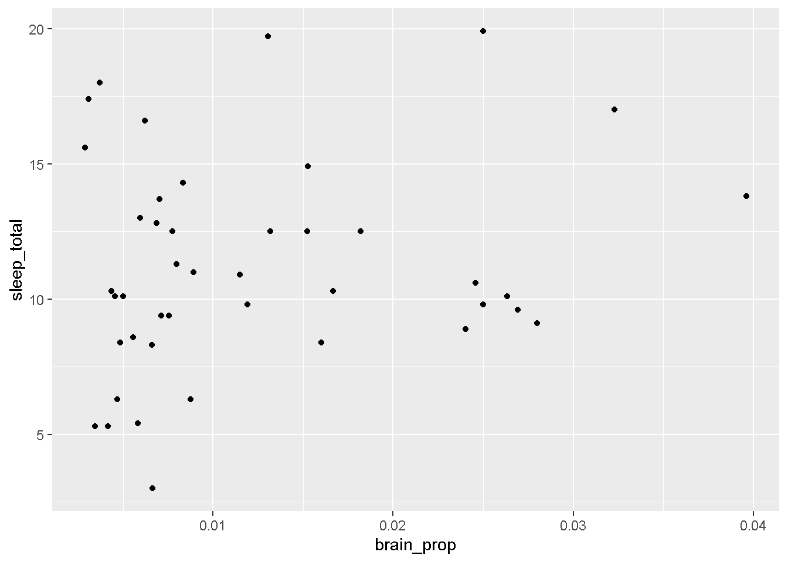

1) Rename this assignment as “Lab 10 Assignment [Last, First].Rmd”
2) Check and set (if needed) your working directory. If you’d like to load packages with library(), please do so in this block. Please load the tidyverse!.
here::here()
[1] "C:/Users/jessi/OneDrive - Georgia Institute of Technology/Courses/GTA/PSYC2020L"
library(tidyverse)
── Attaching core tidyverse packages ──────────────────────── tidyverse 2.0.0 ──
✔ dplyr 1.1.4 ✔ readr 2.1.5
✔ forcats 1.0.0 ✔ stringr 1.5.1
✔ ggplot2 4.0.0 ✔ tibble 3.2.1
✔ lubridate 1.9.3 ✔ tidyr 1.3.1
✔ purrr 1.0.2
── Conflicts ────────────────────────────────────────── tidyverse_conflicts() ──
✖ dplyr::filter() masks stats::filter()
✖ dplyr::lag() masks stats::lag()
ℹ Use the conflicted package (<http://conflicted.r-lib.org/>) to force all conflicts to become errors
Communication
In this assignment, we will be working with the msleep dataset that comes with the tidyverse library. This data set has information of the sleep characteristics for different mammals! Check out the data with ?msleep to read a little bit about the variables (feel free to comment out or remove afterwards.
3) Then, use three functions to get a sense of the data.
head(msleep)
# A tibble: 6 × 11
name genus vore order conservation sleep_total sleep_rem sleep_cycle awake
<chr> <chr> <chr> <chr> <chr> <dbl> <dbl> <dbl> <dbl>
1 Cheetah Acin… carni Carn… lc 12.1 NA NA 11.9
2 Owl mo… Aotus omni Prim… <NA> 17 1.8 NA 7
3 Mounta… Aplo… herbi Rode… nt 14.4 2.4 NA 9.6
4 Greate… Blar… omni Sori… lc 14.9 2.3 0.133 9.1
5 Cow Bos herbi Arti… domesticated 4 0.7 0.667 20
6 Three-… Brad… herbi Pilo… <NA> 14.4 2.2 0.767 9.6
# ℹ 2 more variables: brainwt <dbl>, bodywt <dbl>
str(msleep)
tibble [83 × 11] (S3: tbl_df/tbl/data.frame)
$ name : chr [1:83] "Cheetah" "Owl monkey" "Mountain beaver" "Greater short-tailed shrew" ...
$ genus : chr [1:83] "Acinonyx" "Aotus" "Aplodontia" "Blarina" ...
$ vore : chr [1:83] "carni" "omni" "herbi" "omni" ...
$ order : chr [1:83] "Carnivora" "Primates" "Rodentia" "Soricomorpha" ...
$ conservation: chr [1:83] "lc" NA "nt" "lc" ...
$ sleep_total : num [1:83] 12.1 17 14.4 14.9 4 14.4 8.7 7 10.1 3 ...
$ sleep_rem : num [1:83] NA 1.8 2.4 2.3 0.7 2.2 1.4 NA 2.9 NA ...
$ sleep_cycle : num [1:83] NA NA NA 0.133 0.667 ...
$ awake : num [1:83] 11.9 7 9.6 9.1 20 9.6 15.3 17 13.9 21 ...
$ brainwt : num [1:83] NA 0.0155 NA 0.00029 0.423 NA NA NA 0.07 0.0982 ...
$ bodywt : num [1:83] 50 0.48 1.35 0.019 600 ...
summary(msleep)
name genus vore order
Length:83 Length:83 Length:83 Length:83
Class :character Class :character Class :character Class :character
Mode :character Mode :character Mode :character Mode :character
conservation sleep_total sleep_rem sleep_cycle
Length:83 Min. : 1.90 Min. :0.100 Min. :0.1167
Class :character 1st Qu.: 7.85 1st Qu.:0.900 1st Qu.:0.1833
Mode :character Median :10.10 Median :1.500 Median :0.3333
Mean :10.43 Mean :1.875 Mean :0.4396
3rd Qu.:13.75 3rd Qu.:2.400 3rd Qu.:0.5792
Max. :19.90 Max. :6.600 Max. :1.5000
NA's :22 NA's :51
awake brainwt bodywt
Min. : 4.10 Min. :0.00014 Min. : 0.005
1st Qu.:10.25 1st Qu.:0.00290 1st Qu.: 0.174
Median :13.90 Median :0.01240 Median : 1.670
Mean :13.57 Mean :0.28158 Mean : 166.136
3rd Qu.:16.15 3rd Qu.:0.12550 3rd Qu.: 41.750
Max. :22.10 Max. :5.71200 Max. :6654.000
NA's :27
4a) Plot the distributions of the variables sleep_total and bodywt in two separate plots. Feel free to use whatever type of distributional geom you prefer.
The sleep_total variable is normal-ish, with pretty thick tails. It appears pretty symmetrical. The body_wt variable has some very large outliers!
5a) Make a scatterplot with body weight on the x-axis and total sleep on the y-axis.
msleep |>ggplot(aes(x = bodywt, y = sleep_total)) +geom_point()
5b) Label two points you consider interesting / outliers with the type of animal they are (Hint: first, filter() the data to see what the animal names are for the points you select. Then, annotate() the data with a text geom at x and y values close to the selected points. You can absolutely use another solution to label if you’d like; this is just one way).
msleep |>filter(bodywt >2000)
# A tibble: 2 × 11
name genus vore order conservation sleep_total sleep_rem sleep_cycle awake
<chr> <chr> <chr> <chr> <chr> <dbl> <dbl> <dbl> <dbl>
1 Asian … Elep… herbi Prob… en 3.9 NA NA 20.1
2 Africa… Loxo… herbi Prob… vu 3.3 NA NA 20.7
# ℹ 2 more variables: brainwt <dbl>, bodywt <dbl>
msleep |>ggplot(aes(x = bodywt, y = sleep_total)) +geom_point() +annotate("text", x =2300, y =5, label ="Asian elephant") +annotate("text", x =6300, y =5, label ="African elephant")
5c) Modify the x-axis label and y-axis label to be more readable and descriptive. Make sure to add units!
msleep |>ggplot(aes(x = bodywt, y = sleep_total)) +geom_point() +annotate("text", x =2300, y =5, label ="Asian elephant") +annotate("text", x =6300, y =5, label ="African elephant") +labs(y ="Total Sleep (hrs)", x ="Body Weight (kg)")
6a) Let’s say you’re more interested in larger mammals. Create a new version of the dataset that only has mammals under 45kg. Also, create a new variable that represents the ratio of brain weight to body weight (Hint: divide brain weight by body weight).
6b) Create a scatterplot that evaluates the association between the brain-to-body weight proportion variable you created (put that on the x-axis) and total hours of sleep.
large_mammals |>ggplot(aes(x = brain_prop, y = sleep_total)) +geom_point()
Warning: Removed 8 rows containing missing values or values outside the scale range
(`geom_point()`).

6c) Emphasize the points on the graph that represent herbivores (Hint: make a filtered version of the dataset that only includes carnivores and layer on another geom_point()). Add a text annotation on the plot that indicates the group is herbivores.
large_mammals |>ggplot(aes(x = brain_prop, y = sleep_total)) +geom_point() +geom_point(data =filter(large_mammals, vore =="herbi"), color ="seagreen") +annotate("text", y =5, x = .002, label ="herbivores", color ="seagreen")
Warning: Removed 8 rows containing missing values or values outside the scale range
(`geom_point()`).
Warning: Removed 1 row containing missing values or values outside the scale range
(`geom_point()`).
7) Make one more scatterplot of two variables of interest. Make at least two annotations to the plot of things / trends you find interesting. Some ideas: label your favorite mammal on the plot with its name, add a reference line, highlight endangered animals, etc. Add a label and descriptive title to this plot. Try to make this plot as self-explanatory as possible!
ggplot(msleep, aes(x = sleep_total, y = sleep_rem)) +geom_point() +geom_point(data =filter(msleep, vore =="carni"), color ="lightpink") + geomtextpath::geom_textsmooth(data =filter(msleep, vore =="carni"), color ="lightpink",label ="carnivores", method ="lm", hjust = .8) +geom_point(data =filter(msleep, genus =="Felis"), color ="salmon") +geom_point(data =filter(msleep, genus =="Felis"), color ="salmon", shape ="circle open", size =3) +annotate("text", x =12, y =3.5, label ="house cat", color ="salmon") +labs(x ="Total Sleep (hrs)", y ="REM Sleep (hrs)", title ="REM Sleep Trends Positively with Total Sleep",subtitle ="The same holds for carnivores.") +theme_classic()
`geom_smooth()` using formula = 'y ~ x'
Warning: Removed 9 rows containing non-finite outside the scale range
(`stat_smooth()`).
Warning: Removed 22 rows containing missing values or values outside the scale range
(`geom_point()`).
Warning: Removed 9 rows containing missing values or values outside the scale range
(`geom_point()`).